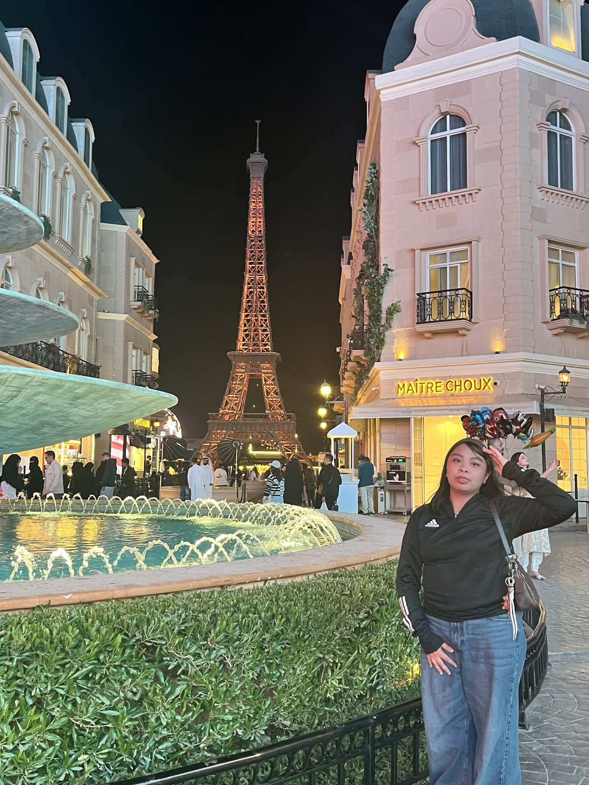
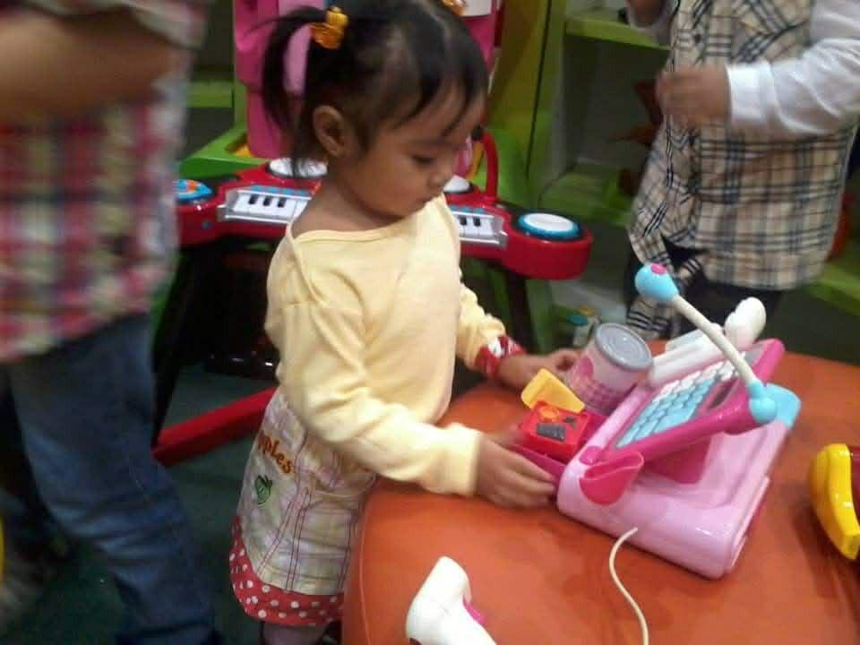

Jane Valerie Gawat Mojica :P



Wassupp!! My name is Jane Valerie Gawat Mojica and I'm 14 years old and turning 15 on November 11. I'm from the Philippines and I was born, raised and currently living in Riyadh, Saudi Arabia. My papa is Roderick Mojica and he is working as an operations consultant, while my mama is Melinda Gawat-Mojica and she works as a nurse. I have an older sister named Chelsea Mae Abrea
Female
2011 liner
Catholic
ISFT-T
Scorpio
Proud SPISIAN
More about me :P
Fun fact about me: I got scoliosis and it was so bad I needed surgery :3
Hobbies: I like to dance and read
Dream occupation: I would like to be a flight attendant someday.
My style in clothes: I like to wear baggy or minimalist types of clothes.
My favorites :P
Food: Anything thats made from potato, ice cream, pasta, & Buldak carbonara
Drink: Water, Pepsi/Coke, & matcha
Artist: Enhypen, Niki, & December Avenue
Movie: "Harry Potter and the Half-blood Prince" & "Descendants 3"
Series: High Potential
Game: Roblox, Minecraft, Rhythm Hive, Mobile Legends, & Call of Duty
Subject: Depends if the topic is easy to understand but mostly science, math, and computer
Color: Undecided
Sport: Chess & badminton
Flower: Orange flowers
Meaningful questions :P
Things I love the most: My family, friends, Enhypen, and my phone
A skill of myself that I'm proud of: My studying skills
Things I'd like to be gifted the most: Enhypen albums, Instax cam, k-beauty/k-skincare, lego, & for Heeseung to come back to Enhypen :(
Thanks for visiting and learning a little more about me :D!!